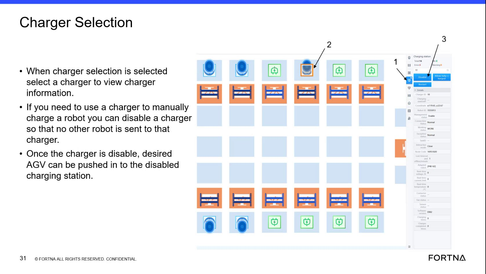

| Procedure ID | proc_charge_a_low_battery_robot_until_it_can_start_and_rejoin_system_operation_v1 |
|---|---|
| Title | Charge A Low-Battery Robot Until It Can Start And Rejoin System Operation |
| Procedure Type | recovery |
| Primary Role | L1_support |
| Support Safe | Yes |
| Validation Status | needs_sme_review |
| Merge Status | source_finalized |
Restore enough battery charge to a low-battery robot so it can start again and be returned to system operation. The source describes a manual charging approach using a reserved/disabled charger, approximate short-duration charging guidance, and re-entry once the robot has enough charge to boot and cycle on its own.
Use when a robot is too low on battery to continue normal operation and needs enough charge to start again so it can be added back into the system and continue charging through normal operation.
Responsible role: L1_support
Instruction:
Use the source-described manual charging approach to reserve a charger if needed, then move the desired low-battery robot to that charging station. The source states a charger can be disabled so no other robot is sent there, and the desired AGV can then be pushed into the disabled charging station.
Expected result:
The low-battery robot is positioned on a charger reserved for manual charging.
Screens / Images:

Stop or Escalate If:
Responsible role: L1_support
Instruction:
Leave the robot on charge and wait for it to regain enough battery to start again. The source indicates the robot may boot automatically once it has enough charge.
Expected result:
The robot regains enough charge to start.
Screens / Images:
Stop or Escalate If:
Responsible role: L1_support
Instruction:
Use the training guidance only as a rough expectation: the source says it may take about 10 minutes to get enough charge to start, and gives an example that charging from about 25% for 15 minutes may bring the robot to about 40%, which is described as good enough for the system to cycle it on its own.
Expected result:
The operator has a rough, source-supported expectation for when the robot may be ready to start and re-enter service.
Screens / Images:
Stop or Escalate If:
Responsible role: L1_support
Instruction:
Once the robot has enough charge to boot up, add it back into the system so it can continue charging through normal system operation. If a charger was disabled for manual charging, re-enable it after recovery so queued AGVs can again be assigned there.
Expected result:
The robot is returned to the system and charger capacity is restored.
Screens / Images:
Stop or Escalate If:
Responsible role: L1_support
Instruction:
Verify that after re-entry the system can cycle the robot on its own.
Expected result:
The robot continues operating and charging normally under system control.
Screens / Images:
Stop or Escalate If: